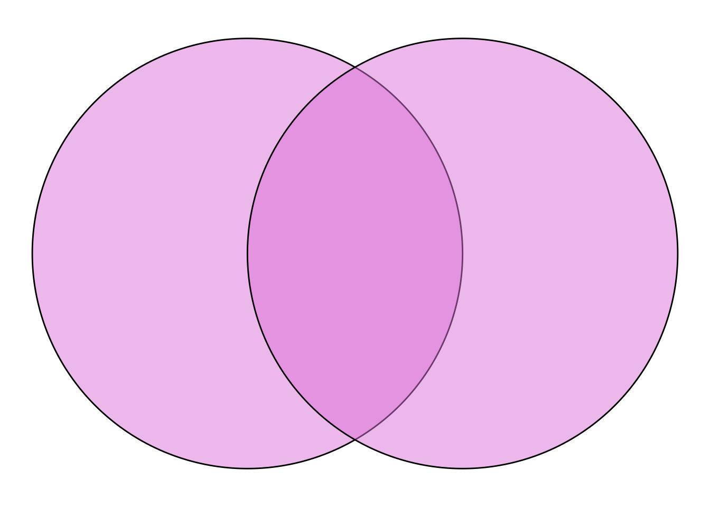
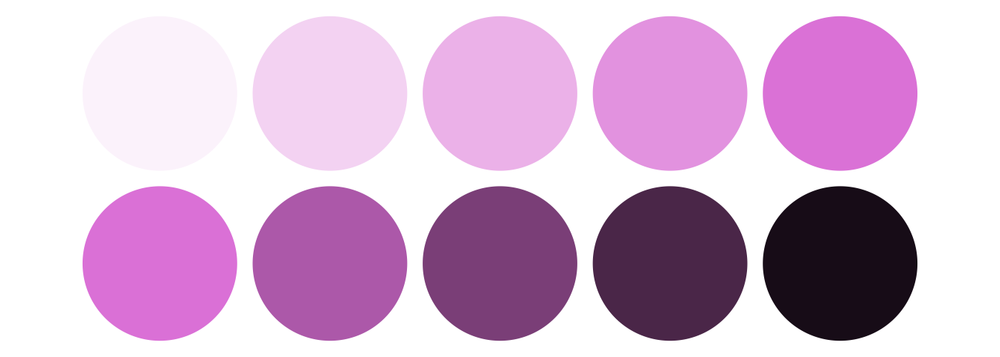
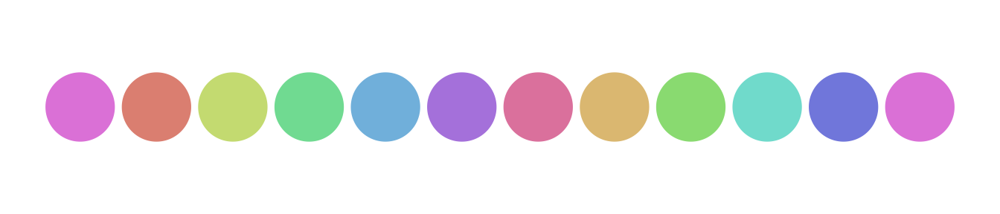
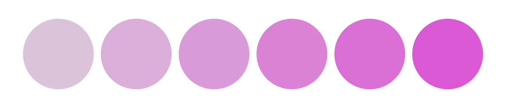

The class_color object has some useful utilities for working with colors. It mostly makes use of functions from the tinter and farver packages.
The class_color object takes R color names or hex strings as input.
my_color <- class_color("orchid")The underlying data of class_color can be retrieved with the c function or via the @color property:
c(my_color)
#> [1] "#DA70D6FF"
my_color@color
#> [1] "#DA70D6FF"The ob_* classes have fill and color properties that can take direct character strings or class_color objects as input.
A variety of color manipulation functions are available. Colors can be darkened:
Colors can be lightened:
Colors can be made transparent:
ggdiagram() +
ob_circle(fill = my_color@transparentize(.5)) +
ob_circle(fill = my_color@transparentize(.5),
center = ob_point(1,0))
Here we create sequences of shades with the @lighten and @darken properties:
ggdiagram() +
{my_array <- ob_circle(color = NA) %>%
ob_array(fill = my_color@lighten(seq(.1,1,length.out = 5)),
k = 5,
sep = .2)} +
ob_circle(color = NA) %>%
ob_array(fill = my_color@darken(seq(0,.9,length.out = 5)),
k = 5,
sep = .2) %>%
place(my_array, "below", sep = .2) 
The @lighten function makes colors appear the same as @transparentize with a white background. This feature can make be useful when text labels need to be placed over transparent shapes. The @darken function makes colors appear the same as @transparentize with a black background (with @darken’s amount values subtracted from 1).
Color Properties
Different properties of colors and be retrieved and set. Using the HSV color model for Hue (0–360), Saturation (0–1), and Value/Brightness (0–1)
my_color@hue
#> [1] 302.2642
my_color@saturation
#> [1] 0.4862385
my_color@brightness
#> [1] 0.854902We can set a sequence of colors with the same brightness and saturation as the original color but with different hues:
my_color_array <- class_color(
my_color,
hue = my_color@hue + seq(0,720, length.out = 12))
ggdiagram() +
ob_circle(color = NA) %>%
ob_array(fill = my_color_array,
k = 12,
sep = .2)
We can set an array of colors with the same hue as the original color but with different saturation and/or brightness:
my_color_array <- class_color(my_color,
saturation = seq(.1, .6, .1))
ggdiagram() +
ob_circle(color = NA) %>%
ob_array(fill = my_color_array,
k = 6,
sep = .2)
Alternately, the RGB (Red/Green/Blue) color properties can also be retrieved or set. Values are integers ranging from 0 to 255.
my_color@red
#> [1] 218
my_color@green
#> [1] 112
my_color@blue
#> [1] 214